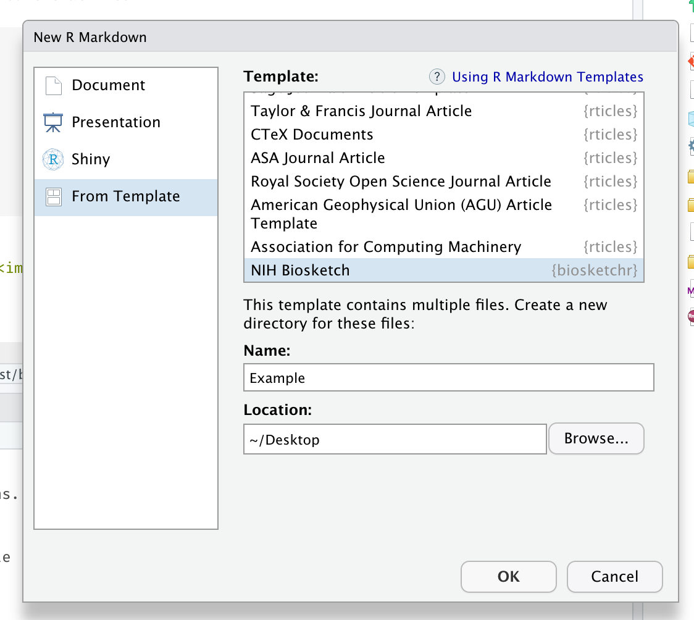
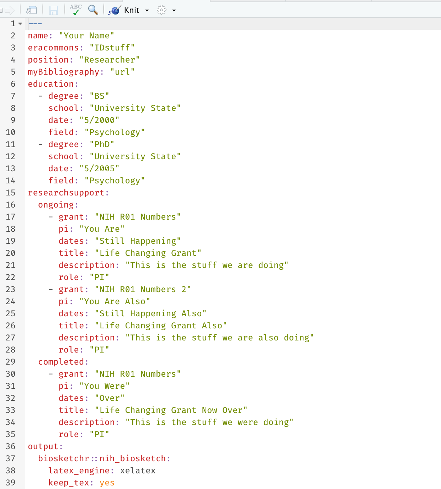
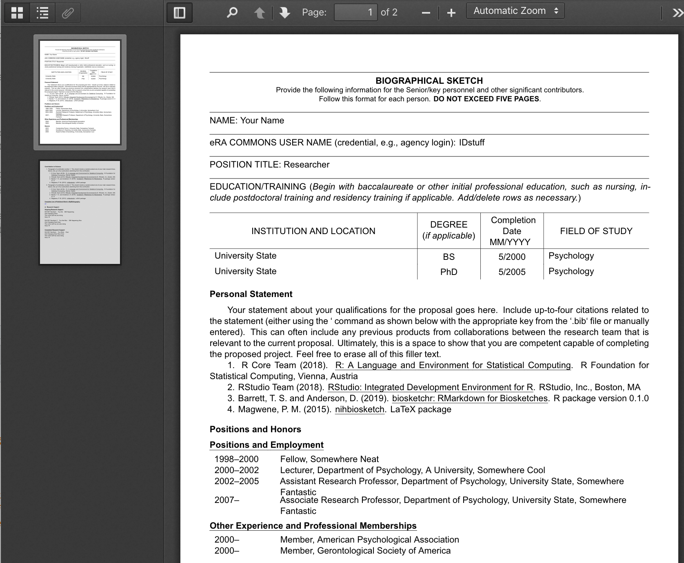

The goal of biosketchr is to make two aspects of creating a Biosketch better:
- Formatting of the biosketch is automatically done for you
- The citations are automatically formatted and inserted in the document
LaTeX
The template was created by Paul M. Magwene and can be found at: github.com/pmagwene/latex-nihbiosketch.
Example
To start, you’ll want to select the appropriate template (currently only the NIH one) from the biosketchr package. This will create a folder with whatever name you choose that contains an Rmd file, the appropriate .cls file, and a .bib file.

The .Rmd file will open automatically showing you this template.

This is where you’ll do all the editing, writing your statement, fill in education, etc. You’ll also want to edit the yourbibfile.bib file with your citations that you want to include in the biosketch.
When you knit this, it will produce a PDF file in the same folder that is formatted like the appropriate biosketch. This PDF will look something like the following:

Enjoy biosketching with RMarkdown!
Note
The package is still undergoing some development and we would love feedback on any aspect that doesn’t work as expected.
We also want to thank the rticles package for showing how to create RMarkdown templates such as in biosketchr.
Please note that the ‘biosketchr’ project is released with a Contributor Code of Conduct. By contributing to this project, you agree to abide by its terms.